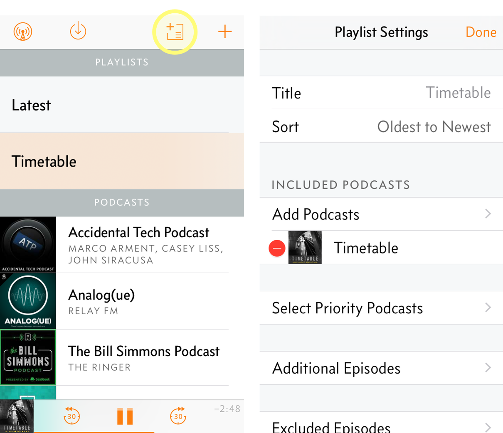
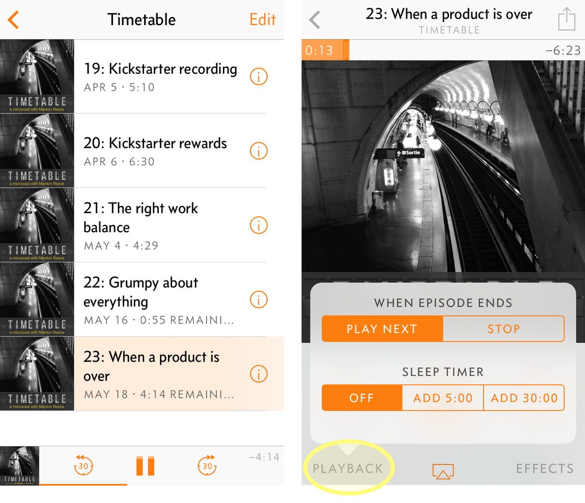

California: don’t forget to vote today. Throughout the primaries I’ve made small ($5) donations to Hillary’s campaign to mark milestones, like last night clinching the nomination. But there are many, many delegates up for grabs today. Let’s wrap this up and unite behind the nominee.
→ 2016/06/07 8:15 amNow that I’ve mastered having an expensive gym membership that I never use, going to move on to having a co-working place I never work at.
→ 2016/06/06 1:22 pmJust posted Core Intuition 235. I thought we’d skip talking about Swift this week, but we got into it anyway. Plus WWDC travel and predictions.
→ 2016/06/03 11:40 amTried Luxe yesterday instead of parking downtown for lunch. Worked great. I could get used to this… along with Uber, Instacart, Amazon Prime Now, etc.
→ 2016/06/03 11:05 amSwift server benchmarks
Interesting Swift web server article comparing Vapor, which I tested last week, to other web server frameworks:
This first post will cover input, i.e. request data. Fetching input from a request, ensuring it is the correct type, and most importantly, not crashing. These are common tasks that most web developers deal with daily. All of the frameworks have their own unique way of doing these tasks–Let’s see how they contrast.
There is some further discussion from fans of other languages in the comments. Overall I think the article was fair. I’m not sure about the focus on “crashing”, though. This seems like a carryover from pro-Swift arguments on the desktop or mobile, and it has less relevance on the web.
For some web apps, it might be fine to throw an exception on bad input data, since it’s caught automatically and returned as a 500 error. I wouldn’t call that a crash anymore than I would call it a crash for a Mac app to present a generic error dialog on unexpected errors.
Finals game 1 tonight! We published Technical Foul episode 7 — “Regression to the Mean” — wrapping up the conference finals, what worked for the Warriors, and predictions for Cleveland vs. Golden State.
→ 2016/06/02 8:53 amCore Intuition’s 8 years and overselling WWDC
It’s 2 weeks before WWDC, which means it was also 8 years ago that we published the first episode of Core Intuition. At WWDC that year, Apple showed off iPhone OS 2.0, MobileMe, and the iPhone 3G. The yearly cycle of improvements to the OS and hardware don’t look much different today, but Apple keeps rolling, and so the total changes since 2008 are massive.
For as many years as I’ve been out to San Francisco for WWDC (and to San Jose before then), each year I have fewer expectations for the conference itself. Some years I don’t even bother guessing or dreaming about new features — I have no pressing needs, no critical missing APIs, no questions to ask Apple engineers in the labs — and I’m happily surprised by whatever Apple gives us.
This year is a little different. It’s the first year that I can remember since the Mac OS X 10.0 and 10.1 releases where an Apple platform needed significant performance improvements to be usable for anyone except early adopters. The first couple versions of Apple Watch were ambitious on features, but now it’s time to do the less glamorous work of making the platform fast. I hope watchOS 3.0 will be the same kind of milestone that Mac OS X 10.2 was in that regard. (And like Mac OS X, I hope it can be done mostly in new software.)
Back to WWDC the conference. I’m still thinking about the interesting venue change for Monday to the Bill Graham Civic Auditorium.
In the discussion on Core Intuition 229 last month, I kept coming back to the idea that this change has to be about growing the conference to allow more developers. Since more people show up on Monday (press and business folks, for example, who have less interest in the technical sessions or labs), you could have a bigger space on Monday and then oversell the conference as a whole, knowing that some ticket holders wouldn’t be around later in the week back at Moscone West.
Maybe that creates more problems than it solves because of packed rooms and long lines to get into sessions, though. Now that I’ve had a while to think about it, it seems unlikely that Apple would risk making the conference worse just to squeeze in another 500 developers.
Could there be some creative layouts in Moscone West that Apple hasn’t tried yet? There are so many downsides to changing the venue that I want to believe it’s part of addressing the biggest issue with the conference: most people don’t win the ticket lottery.
There’s still the problem of hotels. Linking to my post about not giving up on WWDC, John Gruber singled out Airbnb as a bad solution, since there just aren’t that many rooms available. That’s true. And even worse, potential last-minute cancellations make Airbnb less reliable. Where I said Airbnb, I should have just said “cheaper hotel”.
(Alex Cash also has tips for saving money at WWDC. Casey Liss has a good post about rising hotel prices.)
Nevertheless, I know some developers are using Airbnb this year, and I’d like to try it next year for a change of pace and scenery away from the conference. With the convenience of Uber, the risk of settling for a place farther away seems low.
And finally, I’ve enjoyed many recent podcasts about WWDC. Two highlights: Under the Radar episode 24, where Marco Arment and David Smith share their thoughts on whether to attend the conference; and Thoroughly Considered 12, about not just WWDC but the value of attending or exhibiting at conferences as a company.
Saint Mary Cathedral
Spending the day in downtown Austin for a Rubik’s Cube competition.
Core Intuition 234 and Vapor
We published Core Intuition 234 today, with a follow-up discussion on Swift, working toward software releases, and more. From the show notes:
Daniel and Manton talk about the question of Swift’s dependence on Objective-C’s dynamism, how it should or will evolve, and their differences in philosophy about Swift and Objective-C. They also take stock of release discipline and managing customer disappointment with an app’s progress. Finally, they talk about the importance and difficulty of winding down old products.
One of the points I brought up on the show — and which I’ve hinted at here on the blog before — is that web developers will push Swift to become more dynamic. There’s a long history of building web server frameworks like Ruby on Rails that depend on dynamically routing requests to controllers and views, and flexible models that automatically adapt from your database schema. These features tend to get messy when faced with a more static, strongly-typed language.
There is good work being done in the Swift web community already, though. Today I spent some time building a sample app with Vapor, which is probably the closest I’ve seen someone get to the usability of existing web frameworks. I’m a little more optimistic now that we might eventually have a single language for server code and native apps.
NSDrinking is on for this week, Thursday 8pm at Radio Coffee & Beer. Come join us for a coffee or beer (or tacos!) and chat about iOS development and WWDC, which is less than 3 weeks away.
→ 2016/05/25 4:24 pmListening to Timetable
Because episodes of Timetable are short (usually just 5 minutes) and because they aren’t published on a consistent schedule (sometimes once a week, sometimes 3 times a week), I’ve wondered if it may be difficult for some people to fit the podcast into their routine of listening to longer, hour-long podcasts. If you only listen to podcasts while in the car, for example, a 5-minute show isn’t going to fill your commute.
Luckily there are easy solutions to this. The first is: they are so short, just listen whenever you want, while you’re at your desk or walking somewhere or having lunch. Another option: gather up a few episodes and listen altogether, as if it’s 3 parts of a 15-minute podcast.
If you’re an Overcast user, you can create a playlist that will play multiple Timetable episodes in sequence without requiring any tapping in the app to queue up the next one. Here are some screenshots showing one way to set this up after subscribing to Timetable in Overcast.
First, tap the new playlist button in Overcast. Then tap Add Podcasts and select Timetable.

The playlist should automatically show any unplayed episodes. Finally, tap the Playback button while an episode is playing and make sure to highlight Play Next for the When Episode Ends option. This will make sure that you have continuous playback from one episode to the next.

I’ve recorded 23 episodes of Timetable so far, equal to about 2 hours of audio. While consistency is the most important thing for my other podcasts, Core Intuition and Technical Foul, for Timetable I’ve liked the flexibility to experiment with different styles and show formats. Enjoy!
Two months since the iPhone SE first shipped, it’s still rarely available in stores and ships in 2-3 weeks. Best phone I’ve ever owned.
→ 2016/05/23 3:38 pmSwift and sharp knives
David Heinemeier Hansson has a great post today about Ruby’s advanced dynamic features. Some people would criticize Ruby (and Rails) for including “sharp knives in its drawer of features”, but David argues that it’s a worthwhile tradeoff to give developers such power and flexibility:
There’s nothing programmatically in Ruby to stop you using its sharp knives to cut ties with reason. We enforce such good senses by convention, by nudges, and through education. Not by banning sharp knives from the kitchen and insisting everyone use spoons to slice tomatoes.
Given the recent discussions from the Apple community, I couldn’t stop thinking of Swift as I read David’s post. I wouldn’t go as far as saying that Swift is a dull knife; there is a lot to like about the language, and I feel reasonably productive in it now. But David’s “paternalism” line nevertheless rings true to me, that the Swift compiler is trying to protect us from ourselves.
New Core Int, Technical Foul, and Timetable
I somehow recorded 4 podcast episodes this week. We just published episode 233 of Core Intuition, where Daniel Jalkut and I talk about the announcements from Google I/O and compare the latest Swift 3 news to our experience going through previous Apple transitions. From the show notes:
“Manton and Daniel react to Google’s I/O keynote, and weigh the threat of Allo to iMessage. They celebrate Apple’s WWDC promotion of 3rd party events, and the increasing speed of App Store reviews. Finally, they reflect on the announced delay in Swift 3’s planned ABI stability, and Daniel’s sudden FUD about embracing Swift.”
It was a big week for the NBA, too, with the first couple games of the east and west conference finals. On the latest Technical Foul, Ben Thompson and I recap round 2, especially the Spurs loss in 6 games to the Thunder:
Ben and Manton are back geeking out about the NBA. This week we talk Manton through the Spurs loss, discuss OKC versus the Warriors, and whether the Cavs are good enough.
And finally, I published 2 episodes of my microcast Timetable earlier in the week. Episode 22 was about dealing with recent stress — trying to see the bigger picture and focus on the good things. Episode 23 was about how to tell when it’s time to move on from a failed product.
Wanting an open voice assistant platform
I’ve owned an Amazon Echo since it first shipped and it’s great. I also use Siri and like it, though I use it less often for the kind of random questions I might ask Alexa. But after watching yesterday’s Google I/O keynote, I can’t help but feel that eventually Google is going to be far ahead of Amazon and Apple in this space.
Here’s John Gruber writing at Daring Fireball about the keynote:
Google is clearly the best at this voice-driven assistant stuff. Pichai claimed that in their own competitive analysis, Google Assistant is “an order of magnitude” ahead of competing assistants (read: Siri and Alexa). That sounds about right.
The problem with a voice assistant is that the better it gets, the more you want it to do. You continue to ask it more complicated questions, pushing at the limits of the assistant’s capabilities.
Only Google has the expertise in web services and the massive amount of data to keep going beyond basic questions. I expect both Siri and Alexa will hit brick walls that Google will get past, especially in conversational queries that let the user drill down below the most popular, superficial facts.
That is, unless Apple can open up Siri. Not just plugging in new trigger keywords like Alexa’s “skills” API (which would be a good start), but maybe a complete way to extend Siri with third-party code that feels seamless to the user. Surfacing voice-enabled apps automatically through natural queries might be on the same scale of app discoverability as we saw when the App Store launched.
As Ben Thompson lays out well in today’s essay, Google faces a different internet than the open web on which they built their search engine. The default for all these new platforms — from Facebook to Siri to the App Store — is to be closed. There’s a narrow window, right now, for someone to take the lead on creating an open voice assistant standard built on the open web.
Watching the Google I/O keynote. I guess I’ve warmed to the things Google has been working on lately. (I still hate ads, though.)
→ 2016/05/18 12:21 pmApple’s mindset on Swift dynamic features
I let myself go off into a bit of a Swift rant on the latest Core Intuition. I’ve been doing a lot of Swift development recently. The more I use it, the more conflicted I am. I really love some parts of the language, but it’s not what I would have asked for as a successor to Objective-C 2.0.
Remember when Steve Jobs came back to Apple and compared NeXTSTEP to constructing a building by starting out on the 20th floor, with so much of the foundation and common patterns already taken care of for you? Cocoa allowed apps to be built significantly faster than before. Steve said at Macworld Expo in 1997 that the goal was to “eliminate 80% of the code that every developer has to write for their app.”
Swift is not like that. Swift’s priorities are correctness and stability. These have more indirect benefits to developer productivity than we saw going from Carbon to Cocoa.
When Marco Arment wrote about Swift last month, he mentioned wanting a language designed for high-level apps:
Objective-C wasn’t much better for this, but I think we could’ve done better than Swift if the most important goal in Swift was maximizing real-world developer productivity when writing modern Mac and iOS apps. Swift does a little of that, but gives up a lot to also serve lower-level, more clever, language-geekier goals.
This weekend, Brent Simmons has a new post about the loss of dynamic features in “pure” Swift:
What makes me nervous is Swift’s emphasis on type safety and on compile-time resolution. As long as we also have what we need from Objective-C, then that’s fine — then we still get xibs and storyboards, the Responder Chain, and so on.
I hope Brent’s right that this will be a core part of Swift 4. Leaning on the Objective-C runtime feels like a temporary solution because it only exists on the Mac and iOS. Great web frameworks like Ruby on Rails, for example, can’t be built without relying on a more dynamic language. (And to me a great promise for Swift is being able to use it everywhere.)
Daniel Jalkut followed up with a more optimistic post. He thinks Apple is on top of this, even as he acknowledges the clash between existing frameworks and the new language:
Some major design priorities of the Swift language, namely type safety and compile time dependency binding, are at odds with the design priorities of 20 years of evolution in Apple’s frameworks. How and if that disparity will be reckoned by Apple remains to be seen.
I think it’s telling that the “dynamic” keyword isn’t even mentioned in the main language guide. Anything related to Objective-C is off in a separate set of documentation, which includes discouraging statements such as “Requiring dynamic dispatch is rarely necessary” and “use of the performSelector APIs is discouraged”. For Swift to thrive in the future, as a great language for newcomers and long-time Mac developers, Apple will have to compromise on that mindset.
I’m mostly used to the new Instagram icon. What I’m not used to is the algorithmic timeline. Should be disabled unless you’ve missed hundreds of photos since last opening the app (and preferably even then, too).
→ 2016/05/14 6:44 pmOver 50 kinds of root beer

SE/30 and the Mac Classic
I finally read Stephen Hackett’s article over at iMore about using “SE” in Apple product names. He lists the Macintosh SE, iMac DV SE, iBook SE, and others. Most are forgettable, but the SE/30 feels the most like today’s iPhone SE: better internals in an old package.
Stephen also pointed to a Macworld article with quotes about the SE/30 and other Macs. John Siracusa had this to say:
Though future models with the original upright shape were released, they were all tagged with the derisive moniker Classic. The SE/30 bore no such shame. It was and is the undisputed king of the original, iconic Macs and, therefore, of all Macs for all time.
The very first computer I ever owned was the Mac Classic. It was the cheapest Mac at the time, but still very expensive for us. I insisted that we get it despite the cheaper PCs that were more powerful and in color.
What struck me when I later saw my friend’s SE/30 was that the Classic was actually slower and worse in a couple of ways than the SE/30, even though the Classic came out almost two years later. Still, I loved that little machine. Everything good that has happened in my life since can be traced back 25 years ago to when I brought it home.
There’s a lot of hyperbole in the tech industry about creating products that make the world a better place. But most products just don’t have that big of an impact. To me, the Macintosh was an incredible, wildly divergent fork in the road — a choice leading to new friends and a new career, meeting my wife and starting a family. It’s hard to even imagine where the original path was leading.